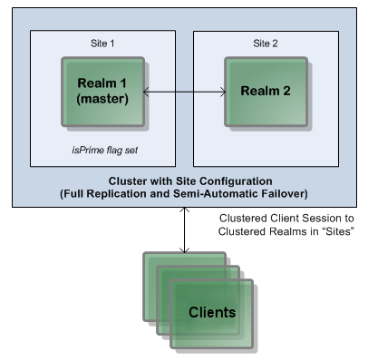
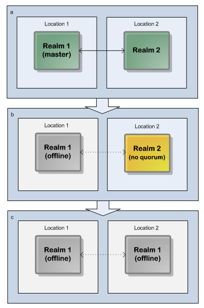
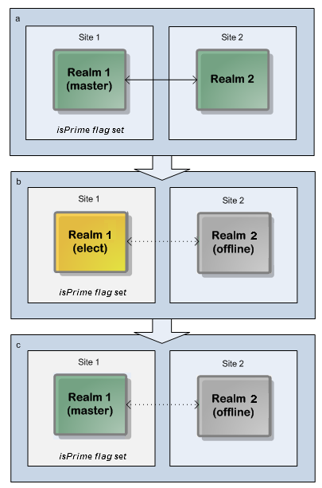
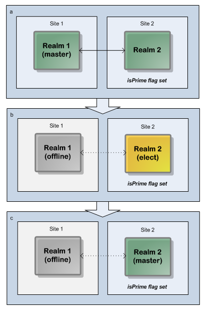

About Active/Active Clustering with Sites
Sites - an exception to the Universal Messaging Cluster Quorum Rule (see
Quorum). The requirement for clusters with sites
Although our recommended approach to deploying a cluster is a minimum of three locations and an odd number of nodes across the cluster, not all organizations have three physical locations with the required hardware. In terms of BCP (Business Continuity Planning), or DR (Disaster Recovery), organizations may follow a standard approach with just two locations: a primary site and a backup site:
Two-realm cluster over two sites, using Universal Messaging Clusters with Sites.
With only two physical sites available, the quorum rule of 51% or more of cluster nodes being available is not reliably achievable, either with an odd or even number of realms split across these sites. For example, if you deploy a two-realm cluster, and locate one realm in each available location, then as soon as either location is lost, the entire cluster cannot function because of the 51% quorum rule:
Two-realm cluster over two locations: a 51% quorum is not achievable if one location/realm fails.
Note: Dotted lines represent interrupted communication owing to server or network outages.
Similarly, if you deployed a three-node cluster with one realm in Location 1 and two in Location 2, and then lost access to Location 1, the cluster would still be available; if, however, you lost Location 2, the cluster would not be available since only 33% of the cluster's realms would be available.
This problem is addressed by Universal Messaging Clusters with Sites.
Overview of clusters with sites
Universal Messaging sites can be considered if an active/active cluster is being deployed across multiple geographically distributed data centers. A typical sites-based deployment has two cluster nodes in each of two sites. The basic concept of clusters with sites is that if only two physical locations are available, and Universal Messaging Clustering is used to provide High Availability and Disaster Recovery, it is possible to allow a single site to continue to operate when the other is unavailable.
This is achieved by allowing an additional vote to be allocated to either of the sites in order to achieve the required cluster quorum of 51%.
If, for example, you have two sites and each site contains just one realm, making a total of two realms in the cluster, the additional vote for one of the sites raises the availability from "one out of two" to "two out of three", that is 67%, so the required quorum of 51% is achieved.
As a further example, if you have two sites and each site contains two realms, making a total of four realms in the cluster, the additional vote for one of the sites raises the availability from "two out of four" to "three out of five", that is 60%, so the required quorum of 51% is achieved.
The site that gets the additional vote is called the primary site. There can only be one primary site at any given time in a cluster, and any other sites in the cluster are non-primary sites. If the sites become disconnected from each other, the primary site will continue to operate and the whole cluster will re-synchronize when the connection is restored.
This approach provides:

Transparent client failover
Semi-transparent server failover
Load balancing and scalability
The quorum rule of availability of more than 50% servers in the cluster is achieved by defining the servers in two sites (primary and backup), and by allocating an additional vote (the "IsPrime" flag) to one of these sites.
The value of the IsPrime flag in a site indicates whether the primary site or the backup site as a whole can cast an additional vote. The failover is automatic if the site where the IsPrime flag is set to false fails. If the site where the IsPrime flag is set to true fails, you need to manually set the IsPrime flag to true on the active site and perform manual failover.
It is essential that the IsPrime flag is only ever applied to a single site at once. This means that the flag should only ever be set manually, after confirming that the other site is genuinely down, not just disconnected. Having two IsPrime sites can lead to an unrecoverable situation called “split brain” that will lead to data loss, so extreme care must be taken to avoid this when using sites.
In a cluster with a production site and a disaster recovery site, you can make either site the primary site, but we recommend you to make the production site the primary site due to the following considerations (assuming a setup with equal numbers of realms on each site):
Primary Site | Effect |
Production site | If the disaster recovery site fails, the production site continues to provide 50% of the available realms in the cluster. Since the production site is the primary site, it gets an additional vote, so the cluster can continue to run. If the production site fails, the disaster recovery site cannot take over automatically, since it cannot achieve the quorum of 51%. This situation requires manual intervention to set the disaster recovery site to be the primary site, so that the cluster can be restarted on the disaster recovery machine. |
Disaster recovery site | The idea behind setting the disaster recovery site to be the primary site is that if the production site fails, the disaster recovery site can achieve quorum and immediately take over from the production site. This may appear at first to be a good setup, but has a big disadvantage: If the production site is not the primary site, a failure on the disaster recovery site would cause the production site to halt, since the production site by itself cannot achieve a quorum of 51%. This is clearly not what a disaster recovery setup is intended for - a failure in the recovery machine shouldn't halt the production machine. |
Note that Universal Messaging does not support selecting the master among the realms of the primary site. If the master node is stopped, it is not guaranteed that the new master node will be a node from the primаry site.
How sites determine if a cluster can form
The general rule regarding the effect of sites when forming a cluster is as follows: If exactly 50% of all realms in the cluster are online, and if all primary site realms are contactable, a cluster can be formed. In all other cases, a cluster can only form if at least 51% of the cluster's realms are contactable. All other quorum and voting rules are identical, with or without sites.
Defining Sites in the API and in the Enterprise Manager
Within the Universal Messaging Admin API, and specifically within a cluster node, you can define individual Site objects and allocate each realm within the cluster to one of these physical sites. Each defined site contains a list of its members, and a flag to indicate whether the site as a whole can cast an additional vote. This flag is known as the isPrime flag. When the isPrime flag is activated for a site, the site becomes the primary site.
You can also set the isPrime flag using the Enterprise Manager.
Examples: Achieving quorum using Universal Messaging clusters with sites
Consider an example scenario where we have a cluster across two physical locations: the default production site and a disaster recovery site, and each site has one realm. Without using sites, this configuration wouldn't be able to satisfy the 51% quorum rule in the event of the loss of one location/realm. The same technique can be used for sites with as many realms as required.
In a disaster recovery situation, where the production site is lost, the disaster recovery site will achieve quorum with only one of the two nodes available because the isPrime flag provides an additional vote for the disaster recovery site.
In these situations it is always advisable to discover the cause of the outage so any changes to configuration are made with the relevant facts at hand.
Example with production site as primary site
Here is the situation if the production site is the primary site (the recommended setup) and the disaster recovery node fails. In the diagram, two servers are configured in just two sites: primary (master) and backup (slave). The IsPrime flag is set to true in the primary site. If the server in the backup site becomes unavailable, the cluster continues to work with the server in the primary site because the primary site has an additional vote to achieve the quorum rule of more than 50% available servers.
Two-realm cluster over two sites: Production site as primary site makes a 51% quorum achievable if non-primary site fails.
Note: Dotted lines in the diagram represent interrupted communication owing to server or network outages.
In this scenario, the cluster's master realm is initially on the production node and stays on the production node after the election of the new master.
Example with disaster recovery site as primary site
Here is the situation if the disaster recovery site is the primary node (as stated earlier, this is not the recommended setup) and the production node fails:
Two-realm cluster over two sites: Disaster recovery site as primary site makes a 51% quorum achievable if non-primary site fails.
Note: Dotted lines in the diagram represent interrupted communication owing to server or network outages.
In this scenario, the cluster's master realm is initially on the production site but the new master realm is on the disaster recovery site.
If the connection to the server in the primary site is lost when the server on the backup site is active, you must manually set the IsPrime flag to true in the backup site so that the server in the backup site can achieve quorum.
Note:
Switching the primary site MUST be a manual operation by an administrator who can confirm that the previous primary site is indeed down and not merely disconnected from the other sites. Attempts to automate this process raises the risk of "split brain" situations, in which loss of data is very likely.